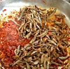

Home
Omena Recipe

Description
The silver cyprinid also known as the Lake Victoria sardine, mukene,
and omena, dagaa is a species of pelagic,
freshwater ray-finned fish in
the danio family, Danionidae from East Africa. It is the only member of
the genus Rastrineobola.
Clean the dried omena thoroughly in warm water, fry it until crispy,
and simmer it in a rich tomato and onion base
Ingredients
- 2 cups dried omena
- 2 to 3 tablespoons cooking oil
- 1 medium onion (chopped)
- 2 ripe tomatoes (diced)
- 1 tablespoon garlic-ginger paste
- 1 teaspoon curry powder or paprika
- Salt to taste
- Juice of ½ a lemon
- Fresh coriander (dhania) for garnishing
Steps
- Clean the omena: Sort through the omena to remove any dirt, stones,
or debris. Wash them in warm water 2 to 3 times, then soak them in hot water
with lemon juice for 10 minutes to reduce the strong fish smell and
remove bitterness. Drain well.
- Fry the omena:Heat a little oil in a pan over medium heat. Add the cleaned omena
and fry for 1 to 2 minutes until golden brown and crispy.
Remove the omena from the pan and set them aside on a plate.
- Make the base: In the same pan, add the chopped onions and cook until soft and golden.
Stir in the garlic-ginger paste and cook until fragrant
- Add tomatoes and spices: Add the diced tomatoes, curry powder, and salt.
Cook the tomatoes down until they form a thick paste, adding a small splash
of water if the pan gets too dry
- Combine and simmer: Return the fried omena to the pan
and mix well with the tomato sauce.Add about a third cup of water,
reduce the heat to low, cover, and let it simmer for 5 minutes
so the fish absorbs the rich flavors
Garnish: in fresh chopped coriander, turn off the heat, and let it sit
covered for a minute before serving. Enjoy hot with fresh ugali